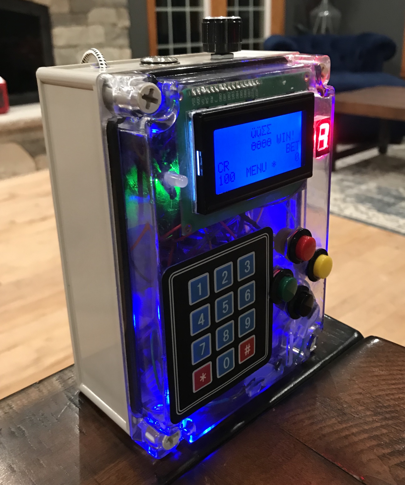
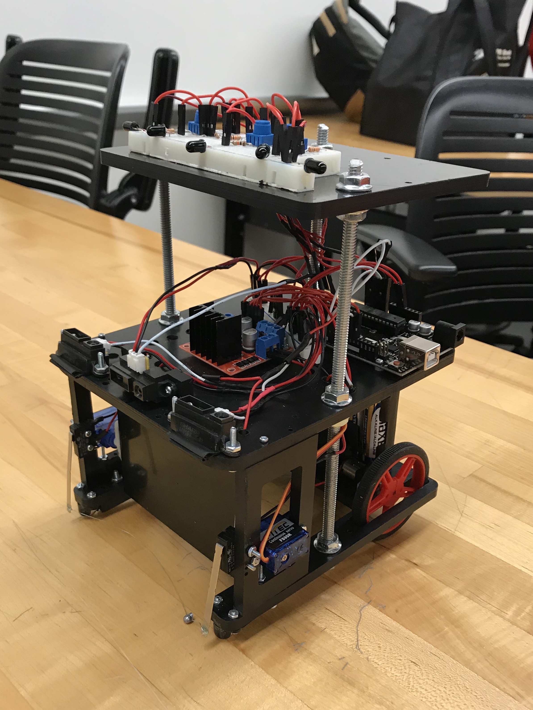

Projects.
Here are some of the cool things I've made!
TI Launchpad Slot Machine

It looks just like a GameBoy, but this device is actually a slot machine. Classmate Zakkaria Hales and I designed and
programmed the machine as the final project in a microcontroller class. You can even insert pennies to keep playing after we take
all of your money, which will happen every time. Being the dirty capitalists we are, we heavily rigged the game against
the player. Penny by penny, we hope to recover the money we spent on textbooks that semester.
The design constraints were to design a slot machine which must utilize a keypad, pushbuttons, speaker, tri-color LED,
7-segment display indicating level of brightness, 16x4 LCD with potentiometer controlled brightness, and a TI MSP432 Launchpad
to do the decision making. Additional features we added include a penny slot for credit entry, a door attached to a
positional servo for penny retrieval, rechargeable battery, relaxing blue ambient lighting, and a selection of Super
Mario Bros tunes of which the user can set to be their victory sound.
Robo Sockey Arduino Robot

GVSU's Robo Sockey competition, a mix between soccer and hockey, is a semester long competition between students enrolled
in the Introduction to Engineering II courses. Around 40 teams, each consisting of 4 students, are tasked with creating an
Arduino robot capable of autonomously navigating a course full of obstacles and other robots. Simultaneously, the robots must
find and capture randomly placed balls and deliver them to one of the 4 goals. With 4 robots in the 6-foot-by-6-foot arena,
teams have three minutes to score as many points as they can before the rounds is over.
My hard-working team implemented many original design features into our robot, which we named The Boi. The Boi scored as many
goals as he could muster, managing to obtain first place and earn the Design Innovation Award.
scottv.dev
This is the website you are currently on. It's written using Google's Angular framework and was my first
programming project that I didn't write entirely in C. If you haven't already, see yourself to the
Tic-Tac-Toe tab
to challenge Mr. Roboto.